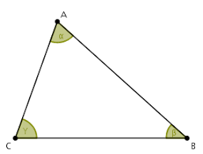

TRIÁNGULO ACUTÁNGULO

Los triángulos acutángulos son aquellos cuyos tres ángulos internos son agudos, ya que miden menos de 90º.
Esto quiere decir que un triángulo cuyos ángulos interiores miden 45º, 80º y 55º, por ejemplo, es un triángulo acutángulo: sus tres ángulos son agudos.